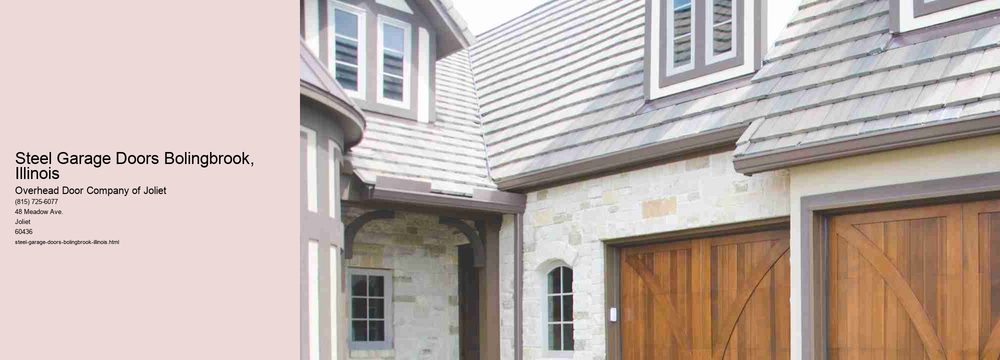

Steel garage doors have become a popular choice for homeowners in Bolingbrook, Illinois, and for good reason. As a community that experiences a full range of weather conditions, from hot and humid summers to cold and snowy winters, Bolingbrook residents require durable and reliable materials for their homes. Steel garage doors meet these demands effectively, offering a combination of strength, durability, and aesthetic appeal that is hard to match.
One of the primary reasons steel garage doors have gained popularity in Bolingbrook is their durability. Steel is a robust material that can withstand significant wear and tear, making it an ideal choice for garage doors that must endure constant use and exposure to the elements. Unlike wood, which can warp or rot, or aluminum, which can dent easily, steel maintains its structural integrity over time. This durability ensures that homeowners in Bolingbrook can rely on their garage doors to function seamlessly for years, even in the face of harsh weather conditions.
In addition to their durability, steel garage doors offer superior security. For many homeowners, the garage is not only a place to park vehicles but also an entry point to the house and a storage area for valuable items. Steel doors provide a robust barrier against potential intruders, giving homeowners peace of mind. Many steel doors also come with advanced locking mechanisms that enhance security, making them a wise investment for safety-conscious residents in Bolingbrook.
Aesthetically, steel garage doors have come a long way from the plain, industrial designs of the past.
Another key benefit of steel garage doors is their energy efficiency. Many steel doors are insulated, helping to regulate the temperature inside the garage. This insulation can be particularly beneficial in Bolingbrook, where temperatures can fluctuate dramatically between seasons. An insulated garage door can help keep the garage warmer in winter and cooler in summer, reducing energy costs and making the home more comfortable overall.
Furthermore, steel garage doors require minimal maintenance compared to other materials. They do not need to be painted or stained regularly, and they are resistant to pests and rot. A simple routine of occasional cleaning and lubrication is typically all that is needed to keep them in good working condition. For busy homeowners in Bolingbrook, this low-maintenance aspect is a significant advantage.
In conclusion, steel garage doors are an excellent choice for homeowners in Bolingbrook, Illinois, offering a blend of durability, security, aesthetic versatility, energy efficiency, and low maintenance.
Garage Door Materials Bolingbrook, Illinois